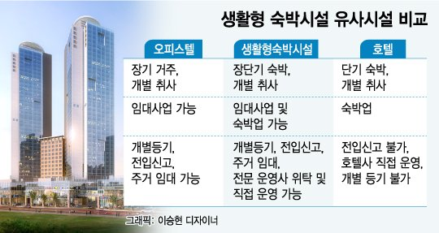

- 생숙이란?
- 오피스텔 장단점
- 유튜브추천
생활형 숙박시설
생활형 숙박시설(레지던스)는 아파트,호텔도,오피스텔도 아닌 개념의 수익형 부동산으로써 취사와 세탁이 가능한 중잔기 또는 단기 숙박시설
주거형 오피스텔과 비슷하지만 다양한 서비스 시설을 보유하고있음
주택이아니므로 각종 규제를 받지않고, 주택으로 인정되지않아 청약과 관계없음.
실거주가능, 하지만 크게 좋지는 않으므로 초피를 받고 파는 전략을 택함
청약신청금만 내면, 그외의 돈을 필요하지않음

분양단지
8월4일~8월6일 : 청주 힐스테이트 센트럴
서울 세운 푸르지오 그래비티 (8월 예정)
마곡 롯데캐슬 르웨스트 (8월 예정)